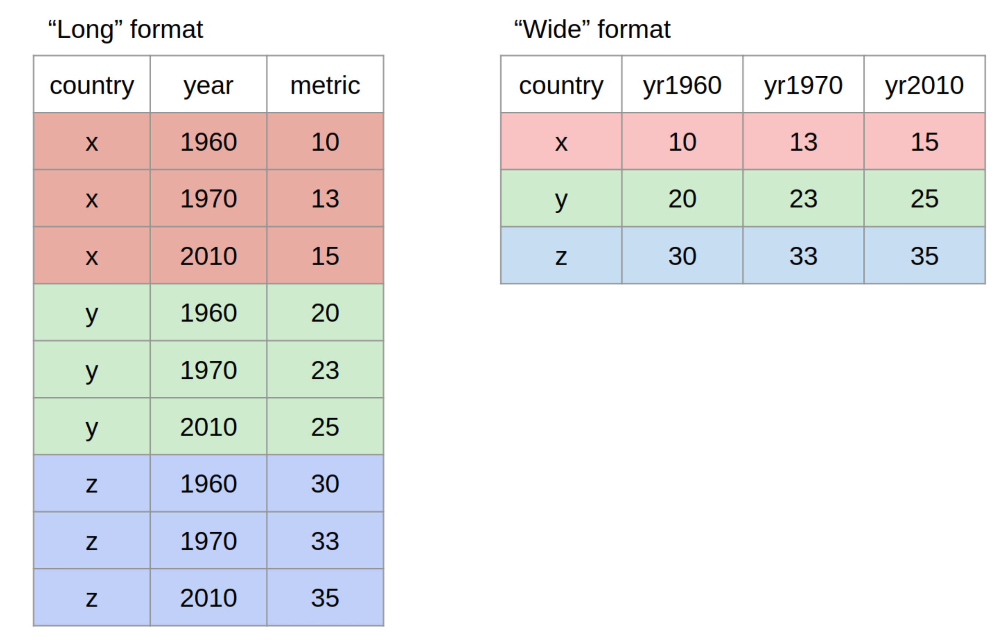

species freq
1 Adelie 152
2 Chinstrap 68
3 Gentoo 1242022 Hội Thảo Bồi Dưỡng R
Elizabeth O. Davis
Chuẩn Bị Sử Dụng R
- Các bạn đã tải R chưa?
- Các bạn đã tải R Studio chưa?
Chào mừng
Đây là ngày đầu tiên của Hội Thảo Bồi Dưỡng. Các bạn chắc đã làm quen với R rồi.
Ngày đầu tiên nội dung chính:
- Cài đặt “packages”/gói dữ liệu
- Giữ lại ghi chú
- Từ vựng cơ bản
- Hiểu dữ liệu
- Tóm tắt thống kê
- Giải lao 🕘
- Quy trình phân tích dữ liệu
- Dữ liệu lộn xộn
- Giải lao 🕘
- Xoay chiều (“pivoting”) và dọn dẹp dữ liệu
Cài đặt “packages”/gói dữ liệu
- Dễ dàng được thực hiện với
install.packages("package") - Thỉnh thoảng gói dữ liệu cần cài đặt thông qua trang ngoài được gọi là GitHub.
devtools::install_github("tidyverse/ggplot2")- Bây giờ hãy luyện tập cả hai mệnh lệnh này
- Bây giờ cài đặt gói dữ liệu
palmerpenguins
Giữ ghi chú
- R có thể sẽ khó khi mới bắt đầu học, nên ghi chú một cách cụ thể về nhũng gì bạn được học sẽ rất hữu ích.
- Có nhiều cách để giữ ghi chú
- Một trăm năm trước khi chị học R, chị viết mọi thứ trên Word nên chị có thề copy và paste trên R console
- Bạn cũng có thể làm như vậy
- Tuy nhiên bây giờ R Studio có thề cung cấp những kiểu tài liệu tích hợp
- Những kiểu tài liệu này có lẽ dễ hơn để sắp xếp, so với Word
Giữ ghi chú
- Nếu bạn click vào biểu tượng “New File”, bạn sẽ thấy nó hiện ra rất nhiều kiểu tài liệu để lựa chọn
- Đầu tiên là R Script, một tài liệu cơ bản và trống để viết R code
- Một phiên bản cao cấp hơn là R Notebook, có khả năng giúp sắp xếp suy nghĩ và code.
- Cuối cùng là R Markdown. Tương tự như R Notebook, nhưng có thề “render” thành tài liệu “html” (như bản thuyết trình này!), tài liệu PDF, tài liệu Word, v.v.
- R markdown có thể sẽ hữu ích nếu bạn muốn tạo ra một bản báo cáo tự động về công việc bạn đã làm.
Note
Cho những sự lựa chọn này, bạn có thể viết bằng tiếng Việt.
Từ vựng cơ bản
Hàm
Hàm cũng có thề gơi là những câu lệnh. Đay là những hành động có thể thực hiện được để chạy dữ liệu, như là mean, summary, v.v.
Vectơ
Một dãy các con số và/hoặc kí tự, như là x <- c(1,2,3,4,5). Nhiều vectơ có thề tạo ra hệ thống dữ liệu. Một vectơ cũng có thề là một biến số.
Biến số
Một biến số thường được trình bày như một cột trong bảng dữ liệu. Những ví dụ thường thấy của biến số gồm giới tính, địa điểm, tần suất hành vi, v.v.
Đối tượng
Đối tượng đại diện cho nhiều thứ khác nhau mà chúng ta đang phân tích. Ví dụ, “đối tượng” có thề là “df”, như là như một sự đại diện cho khung dữ liệu cụ thể mà bạn đang phân tích. Hay, trong ví dụ trên, “x” thay thế cho vecto chúng ta muốn phân tích. Đối tượng là cách để chúng ta thực hiện nhứng phép tính phức tạp trên những thứ phức tạp, nhưng chỉ cần một ít nỗ lực để phân tích.
Hiểu dữ liệu
Làm quen với dữ liệu là rất quan trọng
Một vài câu lệnh chính là:
head(df)str(df)levels(df)length(df)Bây giờ, hãy luyện tập với những câu lệnh này trên
palmerpenguins
Những hàm tóm tắt cơ bản
summary(df$variable)- Hay dành ra một ít thời gian để thực hiện câu lệnh này trên bất kì biến số nào mà bạn chọn, trong bảng dữ liệu
palmerpenguins. - Hãy nhớ rằng có những thống kê tóm tắt quan trọng khác.
median(df$variable)- Ví dụ khác?
Thống kê tóm tắt sử dụng Tidyverse
- Các trang trình bày trước đó đang sử dụng các hàm từ cơ sở R, nói cách khác các lệnh đi kèm với bất kỳ bản tải xuống nào của R.
- Như chúng ta đã thấy, các gói là một phần quan trọng của việc sử dụng R vì chúng thường được thiết kế để giúp phân tích dễ dàng hơn.
- Trong bài tập này, chúng ta sẽ sử dụng một thống kê tóm tắt từ
tidyverse - Các em có nhớ cách truy cập gói này không?
plyrvàdplyrcó hàng trăm lệnh có thể giúp các em tạo thống kê tóm tắt về dữ liệu của mình.- Thường, những lệnh đó cũng có thể được áp dụng trên nhiều biến, điều này sẽ giúp các em tiết kiệm thời gian.
# A tibble: 9 × 3
species island n
<fct> <fct> <int>
1 Adelie Biscoe 44
2 Adelie Dream 56
3 Adelie Torgersen 52
4 Chinstrap Biscoe 0
5 Chinstrap Dream 68
6 Chinstrap Torgersen 0
7 Gentoo Biscoe 124
8 Gentoo Dream 0
9 Gentoo Torgersen 0- Lưu ý rằng mã này sử dụng
%>%pipe. Pipe là một cách đơn giản để nói với R “Tôi muốn bạn tìm trong tập dữ liệu về chim cánh cụt và đếm các loài cũng như đảo”.
# A tibble: 1 × 1
avg_body_mass
<dbl>
1 4202.- Tương tự như ví dụ trước, dấu pipe ở đây nói với R rằng “Tôi muốn bạn xem trong tập dữ liệu về chim cánh cụt và tóm tắt khối lượng cơ thể trung bình của mẫu, thành một biến gọi là ‘khối lượng cơ thể trung bình’.”
Giải lao
Quá trình phân tích
- R rất giỏi trong việc tạo dữ liệu, nhưng bạn phải xác định dữ liệu nào là quan trọng nhất để giao tiếp.
- Đảm bảo rằng bạn luôn trình bày một vài thống kê tóm tắt
- Nếu bạn đang làm công việc khoa học xã hội, thường đây sẽ là độ tuổi, tỷ lệ nữ giới, tỷ lệ dân tộc thiểu số, v.v.
Dữ liệu lộn xộn
- Dữ liệu thường lộn xộn
- Thường thì nó có NA, hoặc đã được nhập sai, hoặc ở định dạng sai
- Chị sẽ chỉ ra từng trường hợp phổ biến này và cách xử lí chúng
NA
- “NA” là gì?
- “NA” là khi các em thiếu dữ liệu HOẶC nhập dữ liệu không chính xác
- Ví dụ: các em có thể có tập dữ liệu sau:
ID <- c(122, 366, 789, NA, 1001) #randomized ID numbers
score <- c(4, 60, 2, 1, 5) #scores given about feelings towards bears, from "Strongly Disagree" (a score of 1) to Strongly Agree (a score of 5)
df <- data.frame(ID, score)
df ID score
1 122 4
2 366 60
3 789 2
4 NA 1
5 1001 5- Các em nhận thấy vấn đề gì trong khung dữ liệu này?
- Khung dữ liệu này có vấn đề về NA trong biến
IDvà một số được nhập không chính xác trong biếnscore - Vì chúng ta đang tập trung vào NA, trước tiên hãy giải quyết vấn đề đó
- Cách đơn giản nhất để xử lý sự cố này là thông qua lệnh sau:
- Tuy nhiên, lưu ý rằng nó xóa toàn bộ hàng khỏi tập dữ liệu
- Điều này có thể chấp nhận được nếu các em có một tập dữ liệu lớn, nhưng đôi khi các em sẽ muốn giữ lại thông tin khác
- Ví dụ: nếu em đang báo cáo điểm trung bình của tập dữ liệu này, em sẽ muốn giữ hàng thứ tư
- Chính vì vậy, các em nên đánh giá số lượng NA mà các em đã lồng trong một biến và loại bỏ chúng theo từng trường hợp
- Nhưng, các em có thể thấy rằng điều này dẫn đến một con số vô nghĩa - vì chúng ta biết rằng chúng ta chỉ được cho là đo điểm từ 1 đến 5!
- Vì chúng ta muốn đảm bảo rằng chúng ta nhận được kết quả phù hợp, hãy giải quyết ngoại lệ mà chúng ta có thể thấy trong dữ liệu của mình - điểm dữ liệu “60”.
Tìm kiếm những dữ liệu bất thường
- Trong ví dụ này, chúng ta có thể dễ dàng nhận thấy rằng có một dữ liệu bất thường
- Nhưng điều gì sẽ xảy ra nếu chúng ta có một tập dữ liệu với 1000 điểm dữ liệu?
- Cách dễ nhất để xử lý điều này là dùng Excel, sử dụng chức năng “Sort”
- Khi em xác định các dữ liệu bất thường theo cách này, em có thể xóa chúng khỏi dữ liệu một cách dễ dàng bằng cách chỉ cần nhấn “xóa” và tạo kết quả rỗng
- … Cái mà R dịch là “NA”
Xử lý NA trong một chức năng
- Bây giờ, chị sẽ chỉ cho các em cách chỉ định giá trị “60” của chúng ta là NA
- Bây giờ, chúng ta có thể làm những gì đã học trước đây và chạy
na.omittrên tập dữ liệu đầy đủ - Ngoài ra, chúng ta có thể nói với R rằng chúng ta muốn bỏ qua các NA trong chính hàm
Na.rmlà viết tắt của “NA remove” và là một hành động cụ thể mà em có thể yêu cầu R thực hiện, trong chính hàm- Nhiều hàm trong R có khả năng này và như em có thể thấy, nó giúp em tăng tốc quá trình phân tích bằng cách kết hợp hai hành động thành một
Hãy nghỉ ngơi
Khổ rộng so với khổ dài
From The Carpentries website
Note
Nói chung, em sẽ muốn dữ liệu của mình ở định dạng “dài” - đây là những gì R thích để chạy các phân tích như mô hình tuyến tính (mà chúng ta sẽ đề cập sau).
Các em sẽ làm gì khi dữ liệu ở định dạng sai?
- Có hai lựa chọn:
- Thực hiện điều chỉnh trong Excel
… có thể tốn nhiều công sức.
- Hoặc, thực hiện các điều chỉnh trong R bằng cách sử dụng
tidyverse
… .. nhanh hơn đáng kể, chỉ khi em hiểu cách hoạt động của nó.
Chị sẽ hiển thị điều này trong Excel ngay bây giờ
Như bạn có thể thấy, điều này mất một lúc và có thể vô duyên với các bộ dữ liệu lớn.
Trong tidyverse
- Hai hàm chính:
pivot_wider()
pivot_longer()
From The Carpentries website
Hãy thử điều này với tập dữ liệu chúng ta đã sử dụng trong Excel
Bây giờ chúng ta có thể xoay trục bảng dữ liệu.
# A tibble: 54 × 4
gender integer province score
<chr> <dbl> <chr> <dbl>
1 male 1 tay_ninh 3
2 male 1 nghe_an NA
3 male 1 hanoi NA
4 female 0 tay_ninh 3
5 female 0 nghe_an NA
6 female 0 hanoi NA
7 male 0 tay_ninh NA
8 male 0 nghe_an 2
9 male 0 hanoi NA
10 female 1 tay_ninh NA
# … with 44 more rows
# ℹ Use `print(n = ...)` to see more rowsNhư em có thể thấy, vẫn còn một số hoạt động dọn dẹp cần phải thực hiện! Vậy chúng ta nên làm gì tiếp theo?
Có vẻ như chúng ta có thể thực hiện hàm dọn dẹp nhanh chóng na.omit. Hãy làm như vậy ngay bây giờ.
Cái mà có thể mang lại cho chúng ta điều này:
# A tibble: 18 × 4
gender integer province score
<chr> <dbl> <chr> <dbl>
1 male 1 tay_ninh 3
2 female 0 tay_ninh 3
3 male 0 nghe_an 2
4 female 1 nghe_an 2
5 male 1 hanoi 1
6 female 0 hanoi 1
7 male 0 hanoi 5
8 female 1 hanoi 5
9 male 0 nghe_an 4
10 female 1 nghe_an 4
11 male 0 nghe_an 4
12 female 1 nghe_an 4
13 male 1 tay_ninh 2
14 female 0 tay_ninh 2
15 male 1 nghe_an 1
16 female 0 nghe_an 1
17 male 0 hanoi 1
18 female 1 hanoi 1Nó đã trông tốt hơn rất nhiều! Chúng ta cần làm gì tiếp theo?
Bây giờ chúng ta cần phải dọn dẹp biến số giới của chúng ta.
Để làm điều này, chúng ta nên loại bỏ tất cả các “0” trong biến số nguyên.
Cuối cùng!
… mặc dù còn một điều cuối cùng chúng ta nên làm là đảm bảo dữ liệu của chúng ta hoàn toàn sạch.
Lệnh này cho R biết rằng chúng ta muốn xoá cột số nguyên. Trong ví dụ này, chúng ta không cần nó nữa, vì cột giới tính bây giờ là những gì chúng ta muốn.
Đó là kết thúc của Ngày 1!
Ngày 2
Chào mừng
Đây là Ngày 2 của R Refresher Workshop. Hy vọng rằng mọi người hào hứng để bắt đầu lại!
Ngày 2 nội dung chính:
Khoảng tin cậy
Giải lao 🕘
Hồi quy tuyến tính
Giải lao 🕘
Cụm tương tác trong mô hình tuyến tính
Thực hành phân tích dữ liệu
Đo hệ số ảnh hưởng
Thường, chúng ta cần chứng minh rằng chúng ta thấy ảnh hưởng giữa các nhóm
Điều này là do mặc dù các giá trị trung bình có thể khác nhau, nhưng phương sai trong dữ liệu có thể trùng lặp
Ví dụ:
Khoảng tin cậy
Khoảng tin cậy là một trong những phương pháp mạnh mẽ nhất mà chúng ta có thể sử dụng để đánh giá hệ số ảnh hưởng.
Họ thực hiện các phép tính để đo lường mức độ lan truyền của dữ liệu xung quanh một giá trị trung bình .
Khoảng tin cậy cho chúng ta thấy tất cả giá trị trung bình có thể mà chúng ta có thể thấy, với dữ liệu chúng ta có.
Nếu những giá trị trung bình này bị chồng chéo giữa các nhóm, thì điều đó có nghĩa là chúng ta phải từ chối sự hiện diện của một ảnh hưởng.
Khoảng tin cậy và chim cánh cụt

Khoảng tin cậy và chim cánh cụt
- Đầu tiên, hãy tải lại dữ liệu về chim cánh cụt của chúng ta vào R Studio
- Hy vọng rằng các em nhớ những gì chúng ta nên làm tiếp theo!
# A tibble: 6 × 8
species island bill_length_mm bill_depth_mm flipper_l…¹ body_…² sex year
<fct> <fct> <dbl> <dbl> <int> <int> <fct> <int>
1 Adelie Torgersen 39.1 18.7 181 3750 male 2007
2 Adelie Torgersen 39.5 17.4 186 3800 fema… 2007
3 Adelie Torgersen 40.3 18 195 3250 fema… 2007
4 Adelie Torgersen NA NA NA NA <NA> 2007
5 Adelie Torgersen 36.7 19.3 193 3450 fema… 2007
6 Adelie Torgersen 39.3 20.6 190 3650 male 2007
# … with abbreviated variable names ¹flipper_length_mm, ²body_mass_gtibble [344 × 8] (S3: tbl_df/tbl/data.frame)
$ species : Factor w/ 3 levels "Adelie","Chinstrap",..: 1 1 1 1 1 1 1 1 1 1 ...
$ island : Factor w/ 3 levels "Biscoe","Dream",..: 3 3 3 3 3 3 3 3 3 3 ...
$ bill_length_mm : num [1:344] 39.1 39.5 40.3 NA 36.7 39.3 38.9 39.2 34.1 42 ...
$ bill_depth_mm : num [1:344] 18.7 17.4 18 NA 19.3 20.6 17.8 19.6 18.1 20.2 ...
$ flipper_length_mm: int [1:344] 181 186 195 NA 193 190 181 195 193 190 ...
$ body_mass_g : int [1:344] 3750 3800 3250 NA 3450 3650 3625 4675 3475 4250 ...
$ sex : Factor w/ 2 levels "female","male": 2 1 1 NA 1 2 1 2 NA NA ...
$ year : int [1:344] 2007 2007 2007 2007 2007 2007 2007 2007 2007 2007 ...Chiều dài mỏ
Có vẻ như chúng ta có thế khám phá chiều dài mỏ giữa ba loài chim cánh cụt, để hiểu rằng có sự khác biệt lớn giữa chiều dài mỏ của chúng hay không
Điều nhanh chóng chúng có thể làm là một biểu đồ hộp để trực quan hoá ba bảng dữ liệu khác nhau
Chị sẽ chỉ các em cách làm:
library(tidyverse)
#devtools::install_github("an-bui/calecopal") - make sure you have devtools installed!
library(calecopal)
ggplot(penguins, aes(x = species, y = bill_length_mm, color = species, fill = species)) +
scale_color_manual(values = cal_palette("calochortus"), guide = "none") +
scale_fill_manual(values = cal_palette("calochortus"), guide = "none") +
geom_boxplot(alpha = .5, size = 1.5, outlier.size = 5)Hiểu biểu đồ hộp
Chúng ta có thế thấy cả ba loại xuất hiện chồng chéo
Điều này có nghĩa là không có sự khác biệt đáng kể vế chiều dài mỏ giữa ba loài chim cánh cụt, dựa trên dữ liệu chúng ta có
… nhưng hãy dự phòng điều này bằng các phép tính
Tính khoảng tin cậy trong R
Cài đặt gói
gmodelsChúng ta sẽ sử dụng hàm
citronggmodelsđể tính toán khoảng tin cậy mà chúng ta cầnĐể sử dụng nó, chúng ta sẽ cần tạo các tập dữ liệu con, theo loài
Chúng ta sẽ sử dụng
tidyverseđể làm điều này
[1] "Adelie" "Chinstrap" "Gentoo" Bây giờ để thực hiện khoảng tin cậy
Đó không phải là những gì chúng ta muốn! Các em nghĩ vấn đề là gì?
Đúng rồi. Chúng ta cần xóa NA trong dữ liệu của mình.
Tốt hơn rồi đó!
Bây giờ, chúng ta hãy làm tương tự cho hai loài còn lại. Hãy tiếp tục và thử ngay bây giờ
Mang tất cả lại với nhau
Adelie
Gentoo
Chinstrap
38.8 (38.4, 39.2)
47.5 (47, 48.1)
48.8 (48, 49.6)
Chúng ta có thế thấy rằng trái lại với biểu đồ hộp, không có sự chồng chéo giữa chiều dài mỏ của chim cánh cụt Adelie và hai loài còn lại
Và chỉ có một sự trùng lặp nhỏ giữa Gentoos và Chinstraps
Tuy nhiên, một nhà khoa học giỏi luôn kiểm tra công việc của họ
Điều này rất khác với biểu đồ hộp của chúng ta, nên nó đáng để đánh giá nhiều hơn
Chúng ta có thể làm điều này bằng cách xem chúng ta đã loại bỏ bao nhiêu NA
Nếu chúng ta loại bỏ nhiều, thì chúng ta có thể suy ra rằng có lẽ dữ liệu đã bị lệch và / hoặc kích thước mẫu đơn giản là quá nhỏ để có thể đưa ra những suy luận tốt
- Đây là cách để làm điều đó:
Điều này thực sự trông khá tốt!
Và nếu chúng ta nhìn vào Environment của mình, chúng ta có thể thấy rằng các kích thước mẫu cũng khá mạnh mẽ.
Ghi chú cuối cùng
Chúng ta đã thấy biểu đồ hộp, nhưng chúng ta cũng thấy rằng biểu đồ hộp không hoàn toàn chính xác trong việc hiển thị ảnh hưởng thực tế
Đó là bởi vì lệnh
boxplottrong ggplot tính toán khoảng tin cậy khác nhauNên, em không nên dựa vào hình ảnh để hiểu các hiệu ứng
Luôn tính toán các khoảng tin cậy trong R và báo cáo chúng
Giải lao
Hồi quy tuyến tính
Một khái niệm cơ bản trong thống kê
Một hàm cốt lõi mà dự đoán tương quan giữa các biến khác nhau
Correlation là gì?
“Bất kỳ mối quan hệ thống kê nào, dù là quan hệ nhân quả hay không, giữa hai biến ngẫu nhiên”
Thinh thường trong khoa học, chúng ta cũng muốn hiểu quan hệ nhân quả, tức là liệu một thứ có ảnh hưởng trực tiếp đến một thứ khác hay không
Ví dụ: chúng ta có thể muốn đo lường xem một chiến dịch giáo dục chống lại việc nuôi gấu có khiến người nuôi gấu ngừng nuôi gấu hay không
Việc chứng minh quan hệ nhân quả là điều khó thực hiện đối với nhiều nhà khoa học, vì vậy mối tương quan được sử dụng như một thay thế
Warning
Tương quan và nhân quả không giống nhau. Hãy cẩn thận khi viết kết quả của em!
Hồi quy tuyến tính
Bây giờ, hãy tập trung vào hồi quy tuyến tính
Hồi quy tuyến tính còn được gọi là “mô hình tuyến tính”, hoặc đôi khi là “hồi quy logistic”
Các tên khác nhau tùy thuộc vào các phép tính đang được thực hiện
Đây là một lệnh rất dễ thực hiện trong R và dễ hiểu
Ví dụ: giả sử thay vì sử dụng khoảng tin cậy, chúng ta muốn sử dụng hồi quy tuyến tính để khám phá mối quan hệ giữa
speciesvàbill_length_mm
Nhớ lại các biến
Biến phụ thuộc: Biến mà chúng ta đang xem xét. Nó được gọi là “phụ thuộc” vì chúng ta đang nghiên cứu xem nó có phụ thuộc vào các thuộc tính nhất định trong (các) biến độc lập của chúng ta hay không
Biến độc lập : Các biến “tĩnh” mà chúng ta nghĩ có thể ảnh hưởng đến biến phụ thuộc.
Em có thể thấy rằng trong mô hình tuyến tính của chúng ta, biến phụ thuộc được viết đầu tiên, tiếp theo là biến độc lập
Kí hiệu này theo cách chúng ta sẽ nói bằng chữ: “Chúng ta đang nghiên cứu liệu chiều dài mỏ có phụ thuộc vào loài hay không, ở ba loài chim cánh cụt này.”
Khi nó ở trong Environment của em, hãy sử dụng
summary(m1)Em sẽ thấy kết quả này:
Kết quả này cho chúng ta thấy rằng có một mối quan hệ giữ loài và chiều dài mỏ
Nói cách khác: “Chiều dài mỏ tương quan đến loài.”
Hồi quy tuyến tính: Một công cụ mạnh mẽ và có thể thích ứng
Mô hình tuyến tính có thể được xây dựng để nghiên cứu gần như bất kỳ câu hỏi nào em có thể có
Hãy tiếp tục và cố gắng xây dựng nhiều mô hình tuyến tính hơn trong tập dữ liệu chim cánh cụt, với MỘT biến phụ thuộc và MỘT biến độc lập.
Nghỉ ngơi
Cụm tương tác trong mô hình tuyến tính
Hy vọng rằng tất cả các em cảm thấy tự tin với mô hình
lm (y ~ x)đơn giảnBây giờ, chúng ta sẽ nói về cách xử lý nhiều biến độc lập
Thỉnh thoảng, chúng ta mong đợi rằng một vài biến độc lập sẽ tương tác với nhau, như là chiều cao và cân nặng
Trong mô hình tuyến tính trong R, em phải chỉ định loại tương tác mà em đang khám phá
Chị sẽ chỉ cho em hai ví dụ
Không có mối quan hệ mong đợi giữa các biến
- Nếu chúng ta mong đợi các biến độc lập độc lập với nhau, chúng ta xử lý chúng riêng biệt trong mô hình:
Tương tác mong đợi giữa các biến độc lập
- Đôi khi, chúng ta mong đợi có sự tương tác giữa các biến độc lập
Thực hành phân tích dữ liệu
Bây giờ, chị muốn tất cả các em thực hành trên một tập dữ liệu.
Em có thể chọn từ một số bộ dữ liệu được tải trước:
starwarsstormsmtcarsdiamonds
Quy trình phân tích dữ liệu
Hiểu tập dữ liệu
Tính toán thống kê tóm tắt
Tính khoảng tin cậy HOẶC hồi quy tuyến tính
Viết kết quả của em
Tạo bản trình bày (một hoặc hai trang trình bày) về những phát hiện của em
THÊM: Tạo đồ thị bằng cách sử dụng
ggplot2
✨ Em có thể làm điều này theo nhóm! 🙌